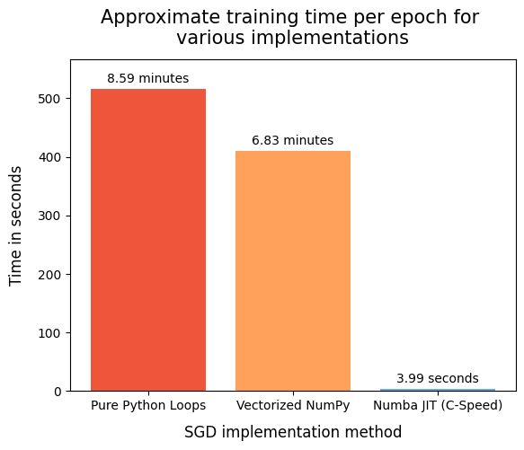
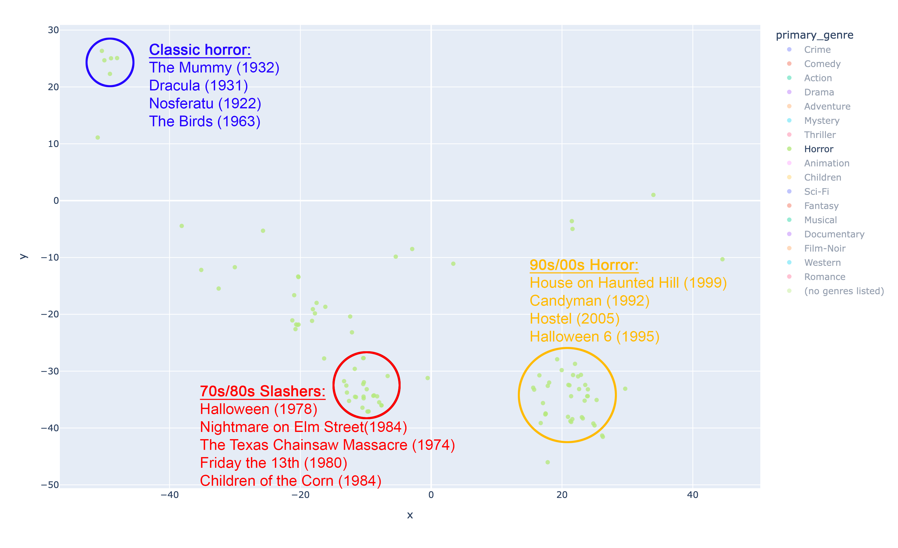
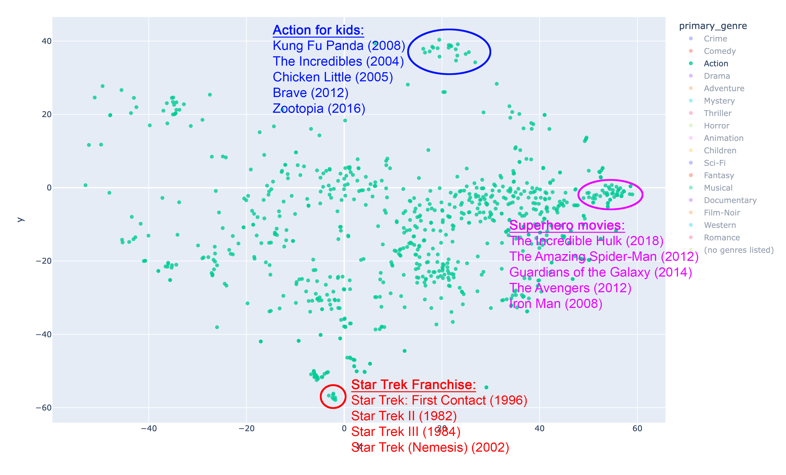

A Collaborative Filtering Movie Recommender
with Latent Space Analysis
What is collaborative filtering?
In my last project, I implemented a content-based model to generate movie recommendations based on the MovieLens32M dataset. The metric we used to evaluate the model was $\text{Precision}@k$, a percentage corresponding to the ratio of movies that a user watched given the model's top-k recommendations for that user.
Though we were able to obtain a $\text{Precision}@5$ score of $16\%$, this required the addition of a popularity cutoff. That is, we restricted the pool of candidates to recommend just those with over 50,000 ratings, effectively turning the movie recommender into a blockbuster recommender. Despite the increased precision, the implementation of such a popularity filter introduces a major problem of discoverability. Without this cutoff, however, the $\text{Precision}@5$ score falls to $0.54\%$, dismally inaccurate.
To remedy this issue we consider the recommendation approach of collaborative filtering. Recall that the content-based recommender used metadata from the movies (their genre) to discover which movies are "closely related." The issue with this approach is that it is often the case that movies are similar not just because of their metadata, but for a whole slew of reasons which may be difficult to represent mathematically. The good news is that collective user behavior can capture these reasons. The collaborative filtering approach is one which aims to exploit this fact, avoiding the need for to encode movies with metadata.
To make things concrete, consider the following example: suppose you watch a movie, say Obsession (2025), and you loved it so much that you rated it 5 stars on LetterBoxd. If we were to take a look at the people who also enjoyed Obsession, we might notice that many of them have seen and enjoyed Backrooms (2026). Thus, it makes sense that you might enjoy Backrooms as well. This is what it means to filter for movies collaboratively: it's not just the movie that determines what to recommend, but also the collective action taken by other users with similar taste.
One collaborative filtering technique is that of matrix factorization, which can be implemented with some simple numerical methods. In this project this approach is described and implemented with Python on the MovieLens32M dataset, using a JIT C-compiler to make the code high-performance to handle its over 25 million ratings efficiently. We compare the $\text{Precision}@5$ of this new model with the previous content-based model (with no popularity cutoff), and observe an over 1100% increase in accuracy. Then, some qualitative analyses on the new model are performed, revealing a higher level of sophistication and nuance in the recommendations made by the collaborative filtering model.
The Matrix Factorization Approach
Recall that user and movie interactions are stored in a sparse matrix $M$, which we call the utility matrix, where rows correspond to users and columns correspond to movies. Precisely, the matrix entry $M_{ij}$ is the rating that user $i$ gave to movie $j$. This matrix is sparse because while there exists over 80,000 movies in the database, users only rate a small faction of them. Thus, most of $M$ is undetermined. The main idea behind the matrix factorization approach is to try to predict the blank entries of $M$. With the intention that these predictions are accurate, we could then suggest those movies to each user with the highest predicted ratings.
We want to approximate the utility matrix $M$ by a matrix factorization $UV^\top$ where $U \in\mathbb{R}^{\text{(#users)}\times k}$ and $V \in \mathbb{R}^{\text{(#movies)}\times k}$, where $k$ is the number of latent factors in our model. The idea is that by using the data already known from $M$, we can reconstruct its missing entries by solving a minimization problem. Once solved, we will have a prediction matrix $\hat{M}$ where $\hat{M} = UV^\top$. For any user $i$ and movie $j$ we can compute the predicted rating that the user will give the movie as $\hat{M}_{ij} = U_{i,\bullet}V_{j,\bullet}^\top$. Not only is this evaluation cost efficient, but so too is the actual factorization algorithm to obtain $U$ and $V$, which employs stochastic gradient descent to minimize $\text{RMSE}(M, \hat{M})$ the root mean squared error between the known utility matrix and our prediction matrix. The following is a brief explanation of the algorithm.
After initializing the matrices $U$ and $V$, the optimization is performed element wise, selecting elements at random with indices $(i,j)$. For any element of $\hat{M}$ we have $\hat{M}_{ij} = U_{i,\bullet}V_{j,\bullet}^\top = \sum_{m=1}^k U_{i,m}V_{j,m}$ and we have a loss function:
$$L_{ij} = \underbrace{(M_{ij} - \hat{M}_{ij})^2}_{\text{Prediction Error}} + \underbrace{\frac{\beta}{2} \left(\sum_{m=1}^K U_{im}^2 + \sum_{m=1}^K V_{jm}^2\right)}_{\text{L2 Regularization Penalty}}$$where $\beta$ is a hyperparameter which controls the penalty strength. Notice that $L_{ij}$ is a real-valued function of $2k$ variables, those are the $k$ entries of $U_{i,\bullet}$ and the $k$ entries of $V_{j,\bullet}$ which contribute to the loss.
For each $1\leq m \leq k$ we want to update $U_{im}$ and $V_{im}$ such that $L_{ij}$ is minimized. This is done with standard calculus and gradient descent. Computing the partial derivative of $L_{ij}$ in the direction of $U_{im}$ given by
$$\frac{\partial L_{ij}}{\partial U_{im}} = 2(M_{ij} - \hat{M}_{ij})(-V{_{jm}}) + \beta\cdot U_{im}$$from which with a learning rate $\alpha$ we will update $U_{im}$ by making the assignment:
$$U_{im} \leftarrow U_{im} - \alpha \frac{\partial L_{ij}}{\partial U_{im}} = U_{im} + \alpha(2(M_{ij}-\hat{M}_{ij})V_{jm} -\beta\cdot U_{im})$$The formula for updating $V_{jm}$ is completely symmetric. Thus we have the following implementation in python for this update at each step:
# Predict dot product for entry (i, j)
pred = 0.0
for m in range(K):
pred += U[i, m] * V[j, m]
e_ij = rating - pred
# SGD factor updates
for m in range(K):
u_im = U[i, m]
v_jm = V[j, m]
U[i, m] += alpha * (2.0 * e_ij * v_jm - beta * u_im)
V[j, m] += alpha * (2.0 * e_ij * u_im - beta * v_jm)Notice that we are careful to store the pre-update values $U_{im}$ and $V_{jm}$ in temporary placeholders so that $V_{jm}$ doesn't depend on the updated value of $U_{im}$, preventing skewing in the algorithm.
The MovieLens32M dataset contains over 25 million ratings. That means the steps in the above code for optimizing a single element must be ran over 25 million times per training epoch. The runtime for both pure Python and Numpy implementations of the above algorithm are inefficient. To reduce the time it takes to train the model, we will use the python library Numba and its just-in-time compiler @njit to convert the algorithm code into a high-performance C-compilation.
By performing a microbenchmark with these different implementations we can approximate the length of time it takes each method to train for one epoch, and summarize the results in the following plot.

Using @njit is a no-brainer. The beautiful thing about @njit is that it doesn't require us to rewrite our Python code at all. All we have to do is place the decorator @njit above the method containing the SGD algorithm and Numba handles the rest.
To determine what the best choice of hyperparameters $\alpha$ and $\beta$ should be, a grid of possible $\alpha$ and $\beta$ choices was constructed, the model was trained on each choice, and the resulting $\text{Precision}@5$ was computed when evaluating the model against the test set. This evaluation and test train split follows the same protocol that was implemented in my previous content-based model UPDATE THIS LINK. The results are summarized in the tables below.
| Alpha | Beta | Average Precision@5 |
|---|---|---|
| 0.002 | 0.020 | 0.0552 |
| 0.002 | 0.050 | 0.0382 |
| 0.002 | 0.100 | 0.0176 |
| 0.002 | 0.150 | 0.0082 |
| 0.005 | 0.020 | 0.0358 |
| 0.005 | 0.050 | 0.0448 |
| 0.005 | 0.100 | 0.0378 |
| 0.005 | 0.150 | 0.0164 |
| 0.010 | 0.020 | 0.0200 |
| 0.010 | 0.050 | 0.0272 |
| 0.010 | 0.100 | 0.0230 |
| 0.010 | 0.150 | 0.0130 |
| 0.020 | 0.020 | 0.0086 |
| 0.020 | 0.050 | 0.0094 |
| 0.020 | 0.100 | 0.0070 |
| 0.020 | 0.150 | 0.0030 |
| Alpha | Beta | Average Precision@5 |
|---|---|---|
| 0.001 | 0.005 | 0.0528 |
| 0.001 | 0.010 | 0.0414 |
| 0.001 | 0.020 | 0.0336 |
| 0.001 | 0.005 | 0.0616 |
| 0.001 | 0.010 | 0.0562 |
| 0.001 | 0.020 | 0.0458 |
| 0.002 | 0.005 | 0.0630 |
| 0.002 | 0.010 | 0.0608 |
As we can see, the choice of $\alpha = 0.002$ and $\beta = 0.005$ yielded the best $\text{Precision}@5$, the metric we want to optimize. Thus, this choice of $\alpha$ and $\beta$ will be fixed for all further training and evaluation of the model. The number of latent factors $k$ is fixed at 64 as a happy medium which allows for sufficient complexity of features while remaining computationally feasible.
Content-based vs Matrix Factorization: which recommendations are better?
Notice that the $\text{Precision}@5$ score for the matrix factorization model is 0.0630 or 6.3%. Compare that to the score of 0.54% made by the content-based model, and we see that the MF model outperforms the CB model by over 1100%. This is truly remarkable, and it suggests something interesting about the mechanics of taste.
Recall that the only way we were able to boost the CB model's precision was by introducing a popularity cutoff, effectively turning the movie recommender into a blockbuster recommender. This is the major drawback of the content-based approach: to boost precision we must restrict the candidate pool, but by doing so we limit discoverability.
By reducing recommendations to metadata about the movie, as was done with genres in the CB model, we oversimplify the nature of taste, which is itself a complex psychological and sociological phenomenon. Matrix-factorization recovers some of this complexity by taking into account the collective behavior of the users.
To get our hands dirty with some interactive qualitative analysis of how the recommendations differ, we can use the app below to generate item-item recommendations in a side-by-side comparison from the content-based and matrix factorization models. For example, if we like How to Train Your Dragon (2010), the content based model will recommend several other children's movies such as Toy Story 3 (2010) and The Polar Express (2004), meanwhile the collaborative filtering model will recommend Pulp Fiction (1994) and Fight Club (1999). I'm not sure how many parents would be thrilled to walk in on their child watching John Travolta dramatically inject Uma Thurman with narcan. On the other hand, the content-based model often recommends films which are scantly known, especially since no popularity filter is implemented here.
Try entering a few of your favorite movies, and seeing which recommendations you like more.
Head-to-Head Recommender System Inspector
Content-Based Filtering
- Select a movie above to view recommendations.
Collaborative Filtering
- Select a movie above to view recommendations.
Visualizing the Model with t-SNE
To reiterate, the most interesting and useful aspect of the matrix-factorization approach is that it makes recommendations based on collective user behavior. This means that although two movies might be of different genres, there may exist some reason why favoring one might indicate a potential favoring of another. These are the kinds of connections that we hope to discover with the collaborative filtering approach.
As an exploration of this phenomenon, we will qualitatively analyze the results from the matrix factorization model by visualizing its recommendations using dimensionality reduction. To this end we will use t-Distributed Stochastic Neighbor Embedding (a.k.a t-SNE), a non-linear dimensionality reduction technique. This is easy to apply to our data using Scikit-learn's manifold module which includes a ready-to-use t-SNE implementation. We collapse the latent factors (all 64 of them) from each movie into 2D space, keeping similar films close together and separating dissimilar points into distinct visual clusters.
Before I point out some specific observations about the visualization, feel free to explore the following interactive t-SNE map built with the Python library Plotly. To keep the plot lightweight, only the top 3,000 most rated movies were included. To facilitate analysis, we've added the listed genres for each movie to allow for easy filtering:
Let's explore some of the visible clusters and try to discover what the model has learned during its training. We'll start by filtering out the t-SNE map for the horror genre. Take a look at the plot below with clusters outlined and a sample of the titles contained therein.

t-SNE visualization of horror movie clusters.
Here we can see that the model has clearly been able to tease out the time-period relationship between movies, distinctly separating films from the 30s, the 70s/80s, and the 90s. The 70s/80s cluster contains the modern classics of horror, and the 90s cluster contains many of its sequels and also new ideas from the genre. As we will continue to observe, time-period will serve as an important feature by which movies are often clustered. Now, let's take a look at the plot for action movies.

t-SNE visualization of action movie clusters.
First, notice that the model is good at discovering film franchises. This is evidenced by the cluster of Star Trek films at the bottom of the plot. This makes sense, as users who are big fans of a particular franchise will likely have seen many of them and rated them favorably. Also notice how the model has discovered "superhero" movies, with this cluster containing exclusively Marvel and DC comic films. Lastly notice that the model has clustered post 2000s action for kids movies together, including one of my personal favorites: Chicken Little (2005). The matrix factorization approach has been able to find meaningful local distinctions within the vast collection of "action" films.
Besides splitting the analysis down by genre, there are also some global trends evident in the t-SNE map. One example is that films from what we call "old Hollywood" have been grouped in the top left of the map, irrespective of genre. For example: the model has learned that someone who likes His Girl Friday (1940) is more likely to watch Gone with the Wind (1939) than they are to watch Meet the Fockers (2004), despite His Girl Friday and Meet the Fockers both being comedies whereas Gone with the Wind is a drama.
I encourage you to play with the t-SNE map yourself and see what other interesting trends you discovered. Here's a challenge: if you filter for the comedies, are you able to locate where the "chick flicks" are?
Moving forward
Matrix factorization is just one of many approaches under the umbrella of collaborative filtering methods. As we have seen, it significantly outperforms the previously implemented content-based model on the MovieLens32M dataset. That being said, there is still a lot of room for improvement to obtain a higher $\text{Precision}@k$ on this dataset.
More sophisticated collaborative filtering models such as EASE utilize shallow autoencoders, a kind of simple neural network, in order to make predictions with extremely high accuracy on this dataset, as high as 30%. Despite the matrix factorization model's shortcomings, it clearly shows the power and advantage of harnessing collective user behavior in order to make recommendations.
To view the source code for this project, the complete pipeline is available to view as a Jupyter notebook on my github.